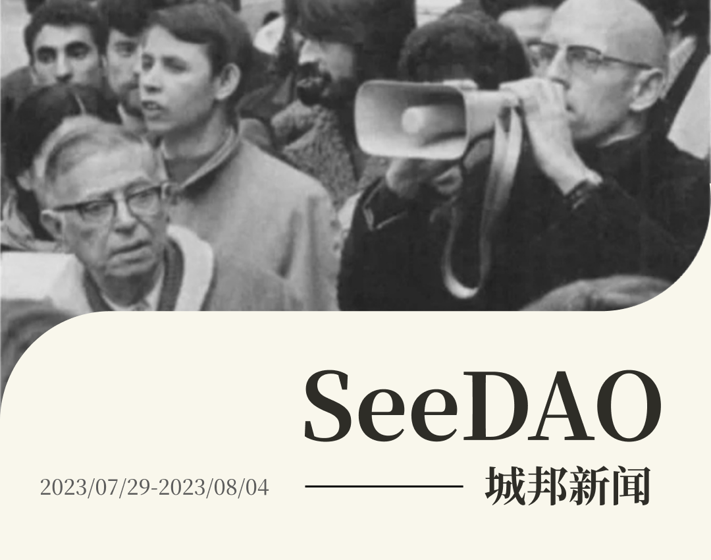
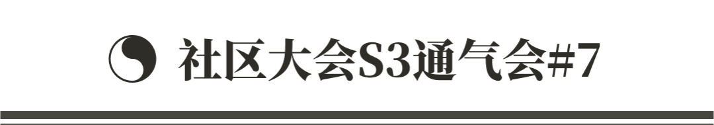
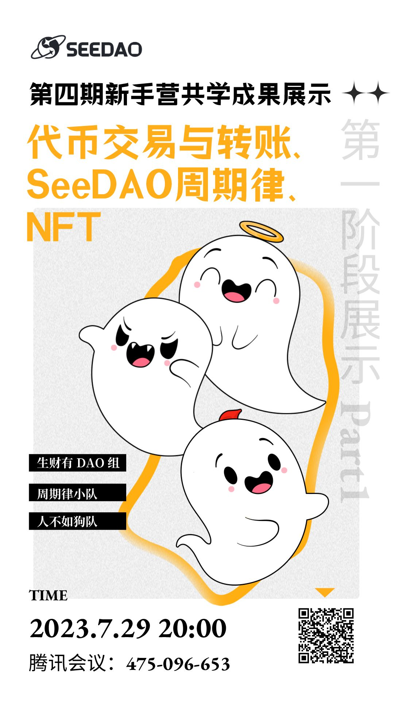
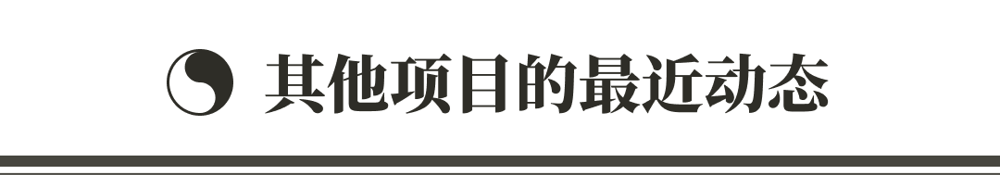
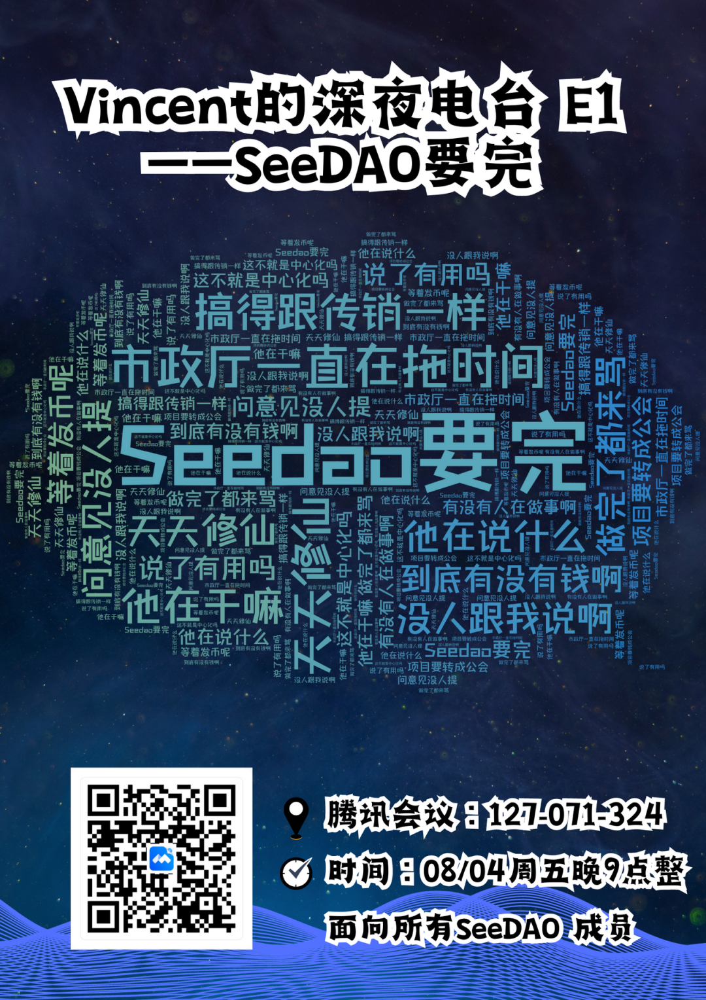
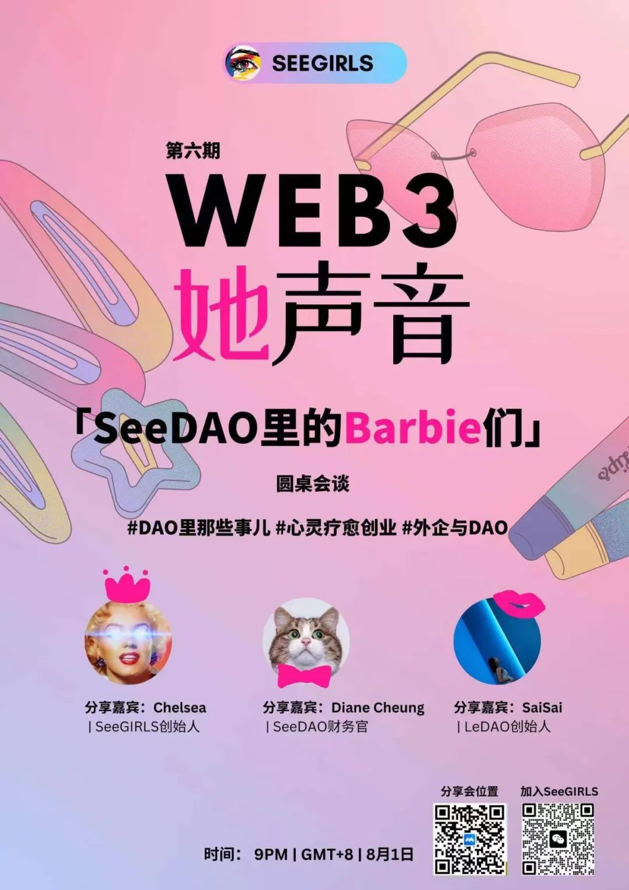

各位小伙伴们，大家好！
今天城邦新闻的主要内容有：
🎓 新手营 4 期已经有 3 个小队进行共学展示，欢迎大家来围观。
🎙SeeDAO 播客增设由 Vincent 牵头的新栏目「SeeWorld」
📝 歪脖三观的第 10 篇原创， 来自冯光能的数字游民系列之二《摆脱内卷：从城市居民到数字居民》
🎉 SeeGIRLS 项目 P2 提案已经获得通过
👸🏻 SeeGIRLS Web3 她声音分享会：「SeeDAO 里的 Barbie 们」圆桌会谈
🎵 翻译公会｜SeeMusic | #18 音乐NFT市场回暖？


✦ 4期新手营
三个小队进行了第一次共学展示
https://seedao.notion.site/d190ef385d9a42ebbe5b64cfb4a64c73?v=e554cb35ccdd4a078d0badbd2c864687

✦ 新加坡 8月篮球赛活动
✦ 新加坡 9月 Token2049 飞盘 + 篮球社交活动

✦ 项目和负责人
/ OS 二期需求讨论，OS 一期数据初始化事项协调
/ 市政厅 SBT 发放事项协调
✦ 治理工程师
/ P2 提案 SeeGIRLS 通过：
https://forum.seedao.xyz/thread/p2-seedaoseegirls-45363
/ 节点共识大会开始进行筹备
✦ SuperMod
/ 和第五期新手营小伙伴讨论 Mod 小队扩张问题
/ 日常 Substack 社区大会 反馈与优化
✦ 财务官
/ 日常财务事项处理

✦ 新加坡 Token 2049 活动筹备
✦ 服务全球数字游民 Seeu.network 已经正式上线
✦ 已经完成重点项目包括：
/ AMA活动：SeeDAO x NodeLabs（AI与RWA主题）
/ SeeDAO x Solana（亚太区开发者中文 Boot Camp 宣发合作）
/ SeeDAO x ETHSydney（August meetup 宣发合作）
✦ 推进中以及筹备中的项目包括：
/ AMA活动：SeeDAO x CIAN｜SeeDAO x AAAny｜SeeDAO x NodeLabs（AI与RWA主题）｜SeeDAO x BugRap
/ 项目合作：SeeDAO x WGG&Cutup｜SeeDAO x Knexus（AIGC 工作坊）｜SeeDAO x Solana MCM（开发者训练营）｜SeeDAO x Cyberconnect｜SeeDAO x Techub
/ 宣发合作：SeeDAO x PermaDAO
✦ 处理 Metaforo 无效贴
✦ 和 Ensoul 对接，沟通 Bug 处理事宜
✦ 澳洲 Web3 & AI Hackfest 赠票事宜官方邮箱对接
✦ 推进 Bounty GO 节点验收，在社区大会同黄喆共同展示该项目
✦ SBT 设计稿已经完成，正在同步完成申请和认定的机制。
✦ SeeMusic｜#18 音乐NFT市场回暖？
✦ 来自 xunyang 的译文《NFT 市场发展史》

✦ 本周情况和相关新鲜事交流分享
✦ 黑客松组队环节，大家自由介绍并开启组队模式

摘要：
就目前来说，数字游民的活动更多是唤醒城市居民原本就有的记忆，让大家重新重视公共生活与社区文化，重新关注公共性、可传承性与可持续性。这其实就是一种以人为本的价值尺度。如果城市居民能够拥抱这一价值尺度，拥抱闲暇，也就有希望向数字居民转化，从而逐渐摆脱内卷，恢复公共生活，推动社会结构转型，同时提高文明发展的可持续性。
✦ Vincent 深夜电台 E1｜SeeDAO 要完


文字记者 | 华子
设计排版 | T1NG
审核 | Ines